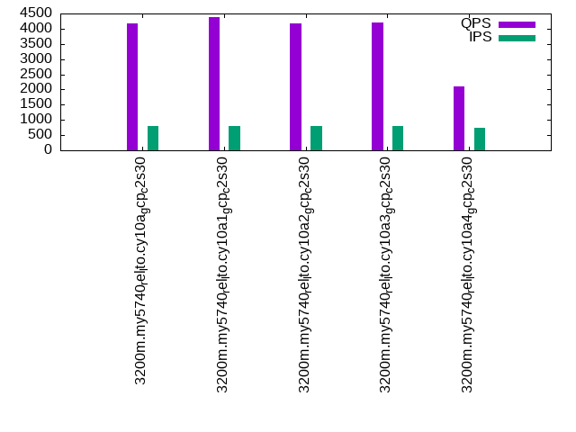

Introduction
This is a report for the insert benchmark with 3200M docs and 8 client(s). It is generated by scripts (bash, awk, sed) and Tufte might not be impressed. An overview of the insert benchmark is here and a short update is here. Below, by DBMS, I mean DBMS+version.config. An example is my8020.c10b40 where my means MySQL, 8020 is version 8.0.20 and c10b40 is the name for the configuration file.
The test server is a c2-standard-30 from GCP with 15 cores, hyperthreads disabled, 120G RAM, XFS + SW RAID 0 on 4 NVMe devices (1.5TB). The benchmark was run with 8 client and there were 1 or 3 connections per client (1 for queries or inserts without rate limits, 1+1 for rate limited inserts+deletes). There are 8 tables, client per table. It loads 400M rows per table without secondary indexes, creates secondary indexes, then inserts 10M rows per table with a delete per insert to avoid growing the table. It then does 3 read+write tests for 1800s each that do queries as fast as possible with 100, 500 and then 1000 inserts/second/client concurrent with the queries and 1000 deletes/second to avoid growing the table. The database is larger than memory.
The tested DBMS are:
- my5740_rel_lto.cy10a_gcp_c2s30 - InnoDB and MySQL 5.7.40, rel_lto build, cy10a_gcp_c2s30 config, compiled with CMAKE_BUILD_TYPE=Release -O2, base config
- my5740_rel_lto.cy10a1_gcp_c2s30 - InnoDB and MySQL 5.7.40, rel_lto build, cy10a_gcp_c2s30 config, compiled with CMAKE_BUILD_TYPE=Release -O2, adds innodb_use_native_aio=off
- my5740_rel_lto.cy10a2_gcp_c2s30 - InnoDB and MySQL 5.7.40, rel_lto build, cy10a_gcp_c2s30 config, compiled with CMAKE_BUILD_TYPE=Release -O2, adds innodb_io_capacity=20k, innodb_io_capacity_max=40k
- my5740_rel_lto.cy10a3_gcp_c2s30 - InnoDB and MySQL 5.7.40, rel_lto build, cy10a_gcp_c2s30 config, compiled with CMAKE_BUILD_TYPE=Release -O2, adds innodb_io_capacity=20k, innodb_io_capacity_max=40k, innodb_flush_sync=OFF
- my5740_rel_lto.cy10a4_gcp_c2s30 - InnoDB and MySQL 5.7.40, rel_lto build, cy10a_gcp_c2s30 config, compiled with CMAKE_BUILD_TYPE=Release -O2, adds innodb_flush_method=fsync
Contents
- Summary
- l.i0: load without secondary indexes
- l.x: create secondary indexes
- l.i1: continue load after secondary indexes created
- q100.1: range queries with 100 insert/s per client
- q500.1: range queries with 500 insert/s per client
- q1000.1: range queries with 1000 insert/s per client
Summary
The numbers are inserts/s for l.i0 and l.i1, indexed docs (or rows) /s for l.x and queries/s for q*.2. The values are the average rate over the entire test for inserts (IPS) and queries (QPS). The range of values for IPS and QPS is split into 3 parts: bottom 25%, middle 50%, top 25%. Values in the bottom 25% have a red background, values in the top 25% have a green background and values in the middle have no color. A gray background is used for values that can be ignored because the DBMS did not sustain the target insert rate. Red backgrounds are not used when the minimum value is within 80% of the max value.
| dbms | l.i0 | l.x | l.i1 | q100.1 | q500.1 | q1000.1 |
|---|---|---|---|---|---|---|
| 3200m.my5740_rel_lto.cy10a_gcp_c2s30 | 844327 | 778992 | 17433 | 4168 | 4646 | 4407 |
| 3200m.my5740_rel_lto.cy10a1_gcp_c2s30 | 834855 | 732624 | 16505 | 4384 | 4998 | 4694 |
| 3200m.my5740_rel_lto.cy10a2_gcp_c2s30 | 848806 | 782803 | 16842 | 4184 | 4681 | 4463 |
| 3200m.my5740_rel_lto.cy10a3_gcp_c2s30 | 850159 | 784530 | 16705 | 4214 | 4706 | 4475 |
| 3200m.my5740_rel_lto.cy10a4_gcp_c2s30 | 828157 | 733800 | 8877 | 2095 | 2720 | 2293 |
This table has relative throughput, throughput for the DBMS relative to the DBMS in the first line, using the absolute throughput from the previous table.
| dbms | l.i0 | l.x | l.i1 | q100.1 | q500.1 | q1000.1 |
|---|---|---|---|---|---|---|
| 3200m.my5740_rel_lto.cy10a_gcp_c2s30 | 1.00 | 1.00 | 1.00 | 1.00 | 1.00 | 1.00 |
| 3200m.my5740_rel_lto.cy10a1_gcp_c2s30 | 0.99 | 0.94 | 0.95 | 1.05 | 1.08 | 1.07 |
| 3200m.my5740_rel_lto.cy10a2_gcp_c2s30 | 1.01 | 1.00 | 0.97 | 1.00 | 1.01 | 1.01 |
| 3200m.my5740_rel_lto.cy10a3_gcp_c2s30 | 1.01 | 1.01 | 0.96 | 1.01 | 1.01 | 1.02 |
| 3200m.my5740_rel_lto.cy10a4_gcp_c2s30 | 0.98 | 0.94 | 0.51 | 0.50 | 0.59 | 0.52 |
This lists the average rate of inserts/s for the tests that do inserts concurrent with queries. For such tests the query rate is listed in the table above. The read+write tests are setup so that the insert rate should match the target rate every second. Cells that are not at least 95% of the target have a red background to indicate a failure to satisfy the target.
| dbms | q100.1 | q500.1 | q1000.1 |
|---|---|---|---|
| my5740_rel_lto.cy10a_gcp_c2s30 | 786 | 3965 | 7925 |
| my5740_rel_lto.cy10a1_gcp_c2s30 | 786 | 3954 | 7903 |
| my5740_rel_lto.cy10a2_gcp_c2s30 | 786 | 3965 | 7916 |
| my5740_rel_lto.cy10a3_gcp_c2s30 | 786 | 3967 | 7916 |
| my5740_rel_lto.cy10a4_gcp_c2s30 | 743 | 3838 | 7623 |
| target | 800 | 4000 | 8000 |
l.i0
l.i0: load without secondary indexes. Graphs for performance per 1-second interval are here.
Average throughput:
Insert response time histogram: each cell has the percentage of responses that take <= the time in the header and max is the max response time in seconds. For the max column values in the top 25% of the range have a red background and in the bottom 25% of the range have a green background. The red background is not used when the min value is within 80% of the max value.
| dbms | 256us | 1ms | 4ms | 16ms | 64ms | 256ms | 1s | 4s | 16s | gt | max |
|---|---|---|---|---|---|---|---|---|---|---|---|
| my5740_rel_lto.cy10a_gcp_c2s30 | 96.268 | 3.662 | 0.039 | 0.015 | 0.014 | 0.001 | 0.302 | ||||
| my5740_rel_lto.cy10a1_gcp_c2s30 | 94.622 | 5.306 | 0.042 | 0.015 | 0.015 | nonzero | 0.267 | ||||
| my5740_rel_lto.cy10a2_gcp_c2s30 | 96.375 | 3.547 | 0.044 | 0.018 | 0.015 | 0.001 | 0.308 | ||||
| my5740_rel_lto.cy10a3_gcp_c2s30 | 96.305 | 3.616 | 0.045 | 0.018 | 0.015 | 0.001 | 0.301 | ||||
| my5740_rel_lto.cy10a4_gcp_c2s30 | 94.319 | 5.417 | 0.225 | 0.024 | 0.015 | 0.001 | 0.300 |
Performance metrics for the DBMS listed above. Some are normalized by throughput, others are not. Legend for results is here.
ips qps rps rmbps wps wmbps rpq rkbpq wpi wkbpi csps cpups cspq cpupq dbgb1 dbgb2 rss maxop p50 p99 tag 844327 0 0 0.0 4008.6 235.0 0.000 0.000 0.005 0.285 86782 73.0 0.103 13 210.5 339.0 86.7 0.302 109083 82211 3200m.my5740_rel_lto.cy10a_gcp_c2s30 834855 0 0 0.0 3965.2 232.7 0.000 0.000 0.005 0.285 88294 73.6 0.106 13 210.5 339.0 86.7 0.267 107483 83310 3200m.my5740_rel_lto.cy10a1_gcp_c2s30 848806 0 0 0.0 4108.2 238.7 0.000 0.000 0.005 0.288 87366 73.3 0.103 13 210.5 339.0 86.7 0.308 108982 82011 3200m.my5740_rel_lto.cy10a2_gcp_c2s30 850159 0 0 0.0 4105.5 238.8 0.000 0.000 0.005 0.288 87640 73.5 0.103 13 210.5 339.0 86.7 0.301 109381 82138 3200m.my5740_rel_lto.cy10a3_gcp_c2s30 828157 0 0 0.0 961.5 211.4 0.000 0.000 0.001 0.261 87950 72.6 0.106 13 210.5 339.0 86.7 0.300 106385 81737 3200m.my5740_rel_lto.cy10a4_gcp_c2s30
l.x
l.x: create secondary indexes.
Average throughput:
Performance metrics for the DBMS listed above. Some are normalized by throughput, others are not. Legend for results is here.
ips qps rps rmbps wps wmbps rpq rkbpq wpi wkbpi csps cpups cspq cpupq dbgb1 dbgb2 rss maxop p50 p99 tag 778992 0 3997 633.2 7896.1 865.0 0.005 0.832 0.010 1.137 27896 29.4 0.036 6 470.7 599.2 87.2 0.032 NA NA 3200m.my5740_rel_lto.cy10a_gcp_c2s30 732624 0 3742 599.6 7365.6 813.6 0.005 0.838 0.010 1.137 38898 26.8 0.053 5 470.7 599.2 87.2 0.026 NA NA 3200m.my5740_rel_lto.cy10a1_gcp_c2s30 782803 0 3998 641.3 7781.8 868.3 0.005 0.839 0.010 1.136 27320 29.3 0.035 6 470.7 599.2 87.2 0.031 NA NA 3200m.my5740_rel_lto.cy10a2_gcp_c2s30 784530 0 4007 640.1 7808.3 866.9 0.005 0.836 0.010 1.131 27384 29.2 0.035 6 470.7 599.2 87.2 0.028 NA NA 3200m.my5740_rel_lto.cy10a3_gcp_c2s30 733800 0 1458 591.9 3254.8 768.5 0.002 0.826 0.004 1.072 28713 27.9 0.039 6 470.7 599.2 87.2 0.044 NA NA 3200m.my5740_rel_lto.cy10a4_gcp_c2s30
l.i1
l.i1: continue load after secondary indexes created. Graphs for performance per 1-second interval are here.
Average throughput:
Insert response time histogram: each cell has the percentage of responses that take <= the time in the header and max is the max response time in seconds. For the max column values in the top 25% of the range have a red background and in the bottom 25% of the range have a green background. The red background is not used when the min value is within 80% of the max value.
| dbms | 256us | 1ms | 4ms | 16ms | 64ms | 256ms | 1s | 4s | 16s | gt | max |
|---|---|---|---|---|---|---|---|---|---|---|---|
| my5740_rel_lto.cy10a_gcp_c2s30 | 3.362 | 67.007 | 20.406 | 9.204 | 0.021 | 0.383 | |||||
| my5740_rel_lto.cy10a1_gcp_c2s30 | 6.291 | 63.466 | 19.750 | 10.481 | 0.012 | 0.364 | |||||
| my5740_rel_lto.cy10a2_gcp_c2s30 | 3.546 | 65.068 | 21.850 | 9.498 | 0.038 | 0.468 | |||||
| my5740_rel_lto.cy10a3_gcp_c2s30 | 4.200 | 63.360 | 22.781 | 9.631 | 0.028 | 0.351 | |||||
| my5740_rel_lto.cy10a4_gcp_c2s30 | 5.933 | 51.624 | 24.494 | 13.775 | 4.174 | 0.652 |
Delete response time histogram: each cell has the percentage of responses that take <= the time in the header and max is the max response time in seconds. For the max column values in the top 25% of the range have a red background and in the bottom 25% of the range have a green background. The red background is not used when the min value is within 80% of the max value.
| dbms | 256us | 1ms | 4ms | 16ms | 64ms | 256ms | 1s | 4s | 16s | gt | max |
|---|---|---|---|---|---|---|---|---|---|---|---|
| my5740_rel_lto.cy10a_gcp_c2s30 | 27.744 | 69.001 | 3.057 | 0.198 | 0.244 | ||||||
| my5740_rel_lto.cy10a1_gcp_c2s30 | 34.436 | 61.975 | 3.344 | 0.236 | 0.009 | 0.364 | |||||
| my5740_rel_lto.cy10a2_gcp_c2s30 | 29.286 | 65.724 | 4.832 | 0.158 | 0.204 | ||||||
| my5740_rel_lto.cy10a3_gcp_c2s30 | 29.814 | 64.657 | 5.353 | 0.176 | 0.195 | ||||||
| my5740_rel_lto.cy10a4_gcp_c2s30 | 30.986 | 58.757 | 10.000 | 0.256 | 0.189 |
Performance metrics for the DBMS listed above. Some are normalized by throughput, others are not. Legend for results is here.
ips qps rps rmbps wps wmbps rpq rkbpq wpi wkbpi csps cpups cspq cpupq dbgb1 dbgb2 rss maxop p50 p99 tag 17433 0 15304 239.1 30121.9 716.5 0.878 14.046 1.728 42.087 130293 31.8 7.474 274 653.9 819.9 87.0 0.383 999 300 3200m.my5740_rel_lto.cy10a_gcp_c2s30 16505 0 13952 218.0 27154.7 665.8 0.845 13.525 1.645 41.310 140598 30.2 8.519 274 654.0 820.6 87.0 0.364 849 250 3200m.my5740_rel_lto.cy10a1_gcp_c2s30 16842 0 14983 234.1 31929.3 732.7 0.890 14.234 1.896 44.549 130670 29.6 7.759 264 654.0 819.1 86.9 0.468 949 300 3200m.my5740_rel_lto.cy10a2_gcp_c2s30 16705 0 14882 232.5 31443.0 733.4 0.891 14.254 1.882 44.956 129928 29.1 7.778 261 654.0 818.9 87.0 0.351 899 300 3200m.my5740_rel_lto.cy10a3_gcp_c2s30 8877 0 7655 206.9 13262.2 360.9 0.862 23.862 1.494 41.627 121228 18.7 13.656 316 654.0 821.9 86.9 0.652 300 100 3200m.my5740_rel_lto.cy10a4_gcp_c2s30
q100.1
q100.1: range queries with 100 insert/s per client. Graphs for performance per 1-second interval are here.
Average throughput:
Query response time histogram: each cell has the percentage of responses that take <= the time in the header and max is the max response time in seconds. For max values in the top 25% of the range have a red background and in the bottom 25% of the range have a green background. The red background is not used when the min value is within 80% of the max value.
| dbms | 256us | 1ms | 4ms | 16ms | 64ms | 256ms | 1s | 4s | 16s | gt | max |
|---|---|---|---|---|---|---|---|---|---|---|---|
| my5740_rel_lto.cy10a_gcp_c2s30 | 39.546 | 2.485 | 47.370 | 10.531 | 0.069 | nonzero | 0.118 | ||||
| my5740_rel_lto.cy10a1_gcp_c2s30 | 39.945 | 2.570 | 48.917 | 8.460 | 0.098 | 0.010 | nonzero | 0.356 | |||
| my5740_rel_lto.cy10a2_gcp_c2s30 | 39.518 | 2.508 | 47.404 | 10.507 | 0.062 | nonzero | 0.179 | ||||
| my5740_rel_lto.cy10a3_gcp_c2s30 | 39.624 | 2.467 | 47.708 | 10.130 | 0.071 | nonzero | 0.168 | ||||
| my5740_rel_lto.cy10a4_gcp_c2s30 | 40.904 | 3.382 | 28.744 | 21.962 | 4.865 | 0.143 | nonzero | 0.327 |
Insert response time histogram: each cell has the percentage of responses that take <= the time in the header and max is the max response time in seconds. For max values in the top 25% of the range have a red background and in the bottom 25% of the range have a green background. The red background is not used when the min value is within 80% of the max value.
| dbms | 256us | 1ms | 4ms | 16ms | 64ms | 256ms | 1s | 4s | 16s | gt | max |
|---|---|---|---|---|---|---|---|---|---|---|---|
| my5740_rel_lto.cy10a_gcp_c2s30 | 32.552 | 66.562 | 0.840 | 0.045 | 0.159 | ||||||
| my5740_rel_lto.cy10a1_gcp_c2s30 | 36.969 | 60.976 | 1.785 | 0.271 | 0.236 | ||||||
| my5740_rel_lto.cy10a2_gcp_c2s30 | 44.410 | 54.628 | 0.941 | 0.017 | 0.003 | 0.304 | |||||
| my5740_rel_lto.cy10a3_gcp_c2s30 | 44.819 | 54.233 | 0.927 | 0.017 | 0.003 | 0.257 | |||||
| my5740_rel_lto.cy10a4_gcp_c2s30 | 18.038 | 63.108 | 18.799 | 0.056 | 0.132 |
Delete response time histogram: each cell has the percentage of responses that take <= the time in the header and max is the max response time in seconds. For max values in the top 25% of the range have a red background and in the bottom 25% of the range have a green background. The red background is not used when the min value is within 80% of the max value.
| dbms | 256us | 1ms | 4ms | 16ms | 64ms | 256ms | 1s | 4s | 16s | gt | max |
|---|---|---|---|---|---|---|---|---|---|---|---|
| my5740_rel_lto.cy10a_gcp_c2s30 | 37.948 | 61.201 | 0.809 | 0.042 | 0.155 | ||||||
| my5740_rel_lto.cy10a1_gcp_c2s30 | 41.410 | 56.684 | 1.646 | 0.260 | 0.236 | ||||||
| my5740_rel_lto.cy10a2_gcp_c2s30 | 49.132 | 49.962 | 0.885 | 0.014 | 0.007 | 0.304 | |||||
| my5740_rel_lto.cy10a3_gcp_c2s30 | 49.434 | 49.674 | 0.875 | 0.014 | 0.003 | 0.257 | |||||
| my5740_rel_lto.cy10a4_gcp_c2s30 | 20.868 | 61.517 | 17.500 | 0.115 | 0.142 |
Performance metrics for the DBMS listed above. Some are normalized by throughput, others are not. Legend for results is here.
ips qps rps rmbps wps wmbps rpq rkbpq wpi wkbpi csps cpups cspq cpupq dbgb1 dbgb2 rss maxop p50 p99 tag 786 4168 30679 479.4 22373.5 551.2 7.361 117.774 28.465 718.043 133642 20.6 32.065 741 653.9 819.9 86.9 0.118 544 112 3200m.my5740_rel_lto.cy10a_gcp_c2s30 786 4384 30099 470.3 20307.9 509.7 6.866 109.854 25.824 663.655 147198 21.0 33.577 719 654.0 820.6 86.9 0.356 591 128 3200m.my5740_rel_lto.cy10a1_gcp_c2s30 786 4184 31373 490.2 23457.2 567.6 7.497 119.958 29.829 739.043 135798 20.4 32.453 731 654.0 819.1 86.9 0.179 559 112 3200m.my5740_rel_lto.cy10a2_gcp_c2s30 786 4214 31388 490.4 23015.2 563.5 7.448 119.169 29.266 733.775 135630 20.4 32.184 726 654.0 818.9 86.9 0.168 559 128 3200m.my5740_rel_lto.cy10a3_gcp_c2s30 743 2095 13281 823.6 11485.0 282.4 6.338 402.494 15.449 389.015 121169 16.8 57.829 1203 654.0 821.9 86.9 0.327 272 16 3200m.my5740_rel_lto.cy10a4_gcp_c2s30
q500.1
q500.1: range queries with 500 insert/s per client. Graphs for performance per 1-second interval are here.
Average throughput:

Query response time histogram: each cell has the percentage of responses that take <= the time in the header and max is the max response time in seconds. For max values in the top 25% of the range have a red background and in the bottom 25% of the range have a green background. The red background is not used when the min value is within 80% of the max value.
| dbms | 256us | 1ms | 4ms | 16ms | 64ms | 256ms | 1s | 4s | 16s | gt | max |
|---|---|---|---|---|---|---|---|---|---|---|---|
| my5740_rel_lto.cy10a_gcp_c2s30 | 39.775 | 2.854 | 50.872 | 6.491 | 0.008 | 0.062 | |||||
| my5740_rel_lto.cy10a1_gcp_c2s30 | 40.298 | 2.995 | 52.499 | 4.166 | 0.040 | 0.001 | nonzero | nonzero | 1.902 | ||
| my5740_rel_lto.cy10a2_gcp_c2s30 | 39.856 | 2.942 | 50.747 | 6.448 | 0.007 | nonzero | 0.072 | ||||
| my5740_rel_lto.cy10a3_gcp_c2s30 | 39.897 | 2.932 | 50.727 | 6.434 | 0.009 | 0.059 | |||||
| my5740_rel_lto.cy10a4_gcp_c2s30 | 42.366 | 3.940 | 32.842 | 17.794 | 3.037 | 0.020 | 0.254 |
Insert response time histogram: each cell has the percentage of responses that take <= the time in the header and max is the max response time in seconds. For max values in the top 25% of the range have a red background and in the bottom 25% of the range have a green background. The red background is not used when the min value is within 80% of the max value.
| dbms | 256us | 1ms | 4ms | 16ms | 64ms | 256ms | 1s | 4s | 16s | gt | max |
|---|---|---|---|---|---|---|---|---|---|---|---|
| my5740_rel_lto.cy10a_gcp_c2s30 | 65.486 | 34.391 | 0.123 | 0.040 | |||||||
| my5740_rel_lto.cy10a1_gcp_c2s30 | 71.010 | 28.487 | 0.498 | 0.004 | 0.001 | 0.581 | |||||
| my5740_rel_lto.cy10a2_gcp_c2s30 | 74.442 | 25.464 | 0.094 | 0.044 | |||||||
| my5740_rel_lto.cy10a3_gcp_c2s30 | 73.399 | 26.469 | 0.132 | 0.049 | |||||||
| my5740_rel_lto.cy10a4_gcp_c2s30 | 50.501 | 44.324 | 5.165 | 0.009 | 0.107 |
Delete response time histogram: each cell has the percentage of responses that take <= the time in the header and max is the max response time in seconds. For max values in the top 25% of the range have a red background and in the bottom 25% of the range have a green background. The red background is not used when the min value is within 80% of the max value.
| dbms | 256us | 1ms | 4ms | 16ms | 64ms | 256ms | 1s | 4s | 16s | gt | max |
|---|---|---|---|---|---|---|---|---|---|---|---|
| my5740_rel_lto.cy10a_gcp_c2s30 | 75.881 | 24.003 | 0.116 | 0.031 | |||||||
| my5740_rel_lto.cy10a1_gcp_c2s30 | 76.763 | 22.795 | 0.437 | 0.005 | 0.001 | 0.443 | |||||
| my5740_rel_lto.cy10a2_gcp_c2s30 | 82.220 | 17.678 | 0.101 | 0.042 | |||||||
| my5740_rel_lto.cy10a3_gcp_c2s30 | 81.060 | 18.810 | 0.130 | 0.041 | |||||||
| my5740_rel_lto.cy10a4_gcp_c2s30 | 55.126 | 40.697 | 4.126 | 0.051 | 0.152 |
Performance metrics for the DBMS listed above. Some are normalized by throughput, others are not. Legend for results is here.
ips qps rps rmbps wps wmbps rpq rkbpq wpi wkbpi csps cpups cspq cpupq dbgb1 dbgb2 rss maxop p50 p99 tag 3965 4646 33009 515.8 21194.6 538.4 7.105 113.683 5.346 139.046 136620 21.9 29.407 707 653.9 819.9 86.9 0.062 591 511 3200m.my5740_rel_lto.cy10a_gcp_c2s30 3954 4998 32724 511.3 18698.8 491.2 6.548 104.763 4.729 127.227 150259 22.3 30.065 669 654.0 820.6 86.9 1.902 624 495 3200m.my5740_rel_lto.cy10a1_gcp_c2s30 3965 4681 33601 525.0 22124.1 553.0 7.179 114.859 5.580 142.818 138664 21.4 29.625 686 654.0 819.1 86.9 0.072 591 511 3200m.my5740_rel_lto.cy10a2_gcp_c2s30 3967 4706 33704 526.6 21979.3 554.0 7.162 114.597 5.541 143.006 139028 21.5 29.544 685 654.0 818.9 86.9 0.059 591 527 3200m.my5740_rel_lto.cy10a3_gcp_c2s30 3838 2720 15720 925.7 11385.2 268.9 5.779 348.466 2.967 71.744 126519 19.1 46.507 1053 654.0 822.1 86.9 0.254 352 48 3200m.my5740_rel_lto.cy10a4_gcp_c2s30
q1000.1
q1000.1: range queries with 1000 insert/s per client. Graphs for performance per 1-second interval are here.
Average throughput:
Query response time histogram: each cell has the percentage of responses that take <= the time in the header and max is the max response time in seconds. For max values in the top 25% of the range have a red background and in the bottom 25% of the range have a green background. The red background is not used when the min value is within 80% of the max value.
| dbms | 256us | 1ms | 4ms | 16ms | 64ms | 256ms | 1s | 4s | 16s | gt | max |
|---|---|---|---|---|---|---|---|---|---|---|---|
| my5740_rel_lto.cy10a_gcp_c2s30 | 39.371 | 2.609 | 49.337 | 8.668 | 0.014 | nonzero | 0.073 | ||||
| my5740_rel_lto.cy10a1_gcp_c2s30 | 39.932 | 2.647 | 50.838 | 6.529 | 0.052 | 0.002 | nonzero | 0.735 | |||
| my5740_rel_lto.cy10a2_gcp_c2s30 | 39.494 | 2.693 | 49.337 | 8.461 | 0.015 | nonzero | 0.073 | ||||
| my5740_rel_lto.cy10a3_gcp_c2s30 | 39.557 | 2.666 | 49.275 | 8.486 | 0.016 | nonzero | 0.090 | ||||
| my5740_rel_lto.cy10a4_gcp_c2s30 | 40.942 | 4.096 | 29.931 | 20.596 | 4.405 | 0.029 | 0.174 |
Insert response time histogram: each cell has the percentage of responses that take <= the time in the header and max is the max response time in seconds. For max values in the top 25% of the range have a red background and in the bottom 25% of the range have a green background. The red background is not used when the min value is within 80% of the max value.
| dbms | 256us | 1ms | 4ms | 16ms | 64ms | 256ms | 1s | 4s | 16s | gt | max |
|---|---|---|---|---|---|---|---|---|---|---|---|
| my5740_rel_lto.cy10a_gcp_c2s30 | 64.056 | 35.837 | 0.107 | 0.034 | |||||||
| my5740_rel_lto.cy10a1_gcp_c2s30 | 68.625 | 30.905 | 0.468 | 0.002 | 0.193 | ||||||
| my5740_rel_lto.cy10a2_gcp_c2s30 | 72.335 | 27.592 | 0.073 | 0.028 | |||||||
| my5740_rel_lto.cy10a3_gcp_c2s30 | 73.855 | 26.071 | 0.074 | 0.043 | |||||||
| my5740_rel_lto.cy10a4_gcp_c2s30 | 41.442 | 50.117 | 8.423 | 0.019 | 0.116 |
Delete response time histogram: each cell has the percentage of responses that take <= the time in the header and max is the max response time in seconds. For max values in the top 25% of the range have a red background and in the bottom 25% of the range have a green background. The red background is not used when the min value is within 80% of the max value.
| dbms | 256us | 1ms | 4ms | 16ms | 64ms | 256ms | 1s | 4s | 16s | gt | max |
|---|---|---|---|---|---|---|---|---|---|---|---|
| my5740_rel_lto.cy10a_gcp_c2s30 | 74.400 | 25.498 | 0.102 | nonzero | 0.069 | ||||||
| my5740_rel_lto.cy10a1_gcp_c2s30 | 74.870 | 24.713 | 0.415 | 0.002 | 0.193 | ||||||
| my5740_rel_lto.cy10a2_gcp_c2s30 | 80.289 | 19.627 | 0.084 | 0.001 | 0.069 | ||||||
| my5740_rel_lto.cy10a3_gcp_c2s30 | 81.534 | 18.363 | 0.102 | 0.001 | 0.070 | ||||||
| my5740_rel_lto.cy10a4_gcp_c2s30 | 45.420 | 47.078 | 7.433 | 0.068 | 0.155 |
Performance metrics for the DBMS listed above. Some are normalized by throughput, others are not. Legend for results is here.
ips qps rps rmbps wps wmbps rpq rkbpq wpi wkbpi csps cpups cspq cpupq dbgb1 dbgb2 rss maxop p50 p99 tag 7925 4407 30820 481.6 23281.7 568.1 6.993 111.895 2.938 73.404 137663 24.8 31.237 844 653.9 820.0 86.9 0.073 559 480 3200m.my5740_rel_lto.cy10a_gcp_c2s30 7903 4694 30417 475.3 21370.0 529.6 6.479 103.672 2.704 68.619 150586 25.0 32.078 799 654.2 821.1 86.9 0.735 591 432 3200m.my5740_rel_lto.cy10a1_gcp_c2s30 7916 4463 31466 491.7 24666.2 590.1 7.050 112.795 3.116 76.326 140960 24.3 31.581 817 654.0 819.2 86.9 0.073 559 463 3200m.my5740_rel_lto.cy10a2_gcp_c2s30 7916 4475 31468 491.7 24361.2 589.6 7.032 112.508 3.077 76.261 140608 24.0 31.420 804 654.0 819.2 86.9 0.090 560 479 3200m.my5740_rel_lto.cy10a3_gcp_c2s30 7623 2293 13222 792.6 12142.5 290.7 5.767 353.981 1.593 39.048 126732 21.4 55.274 1400 654.9 823.8 86.9 0.174 304 48 3200m.my5740_rel_lto.cy10a4_gcp_c2s30
l.i0
l.i0: load without secondary indexes
Performance metrics for all DBMS, not just the ones listed above. Some are normalized by throughput, others are not. Legend for results is here.
ips qps rps rmbps wps wmbps rpq rkbpq wpi wkbpi csps cpups cspq cpupq dbgb1 dbgb2 rss maxop p50 p99 tag 844327 0 0 0.0 4008.6 235.0 0.000 0.000 0.005 0.285 86782 73.0 0.103 13 210.5 339.0 86.7 0.302 109083 82211 3200m.my5740_rel_lto.cy10a_gcp_c2s30 834855 0 0 0.0 3965.2 232.7 0.000 0.000 0.005 0.285 88294 73.6 0.106 13 210.5 339.0 86.7 0.267 107483 83310 3200m.my5740_rel_lto.cy10a1_gcp_c2s30 848806 0 0 0.0 4108.2 238.7 0.000 0.000 0.005 0.288 87366 73.3 0.103 13 210.5 339.0 86.7 0.308 108982 82011 3200m.my5740_rel_lto.cy10a2_gcp_c2s30 850159 0 0 0.0 4105.5 238.8 0.000 0.000 0.005 0.288 87640 73.5 0.103 13 210.5 339.0 86.7 0.301 109381 82138 3200m.my5740_rel_lto.cy10a3_gcp_c2s30 828157 0 0 0.0 961.5 211.4 0.000 0.000 0.001 0.261 87950 72.6 0.106 13 210.5 339.0 86.7 0.300 106385 81737 3200m.my5740_rel_lto.cy10a4_gcp_c2s30
l.x
l.x: create secondary indexes
Performance metrics for all DBMS, not just the ones listed above. Some are normalized by throughput, others are not. Legend for results is here.
ips qps rps rmbps wps wmbps rpq rkbpq wpi wkbpi csps cpups cspq cpupq dbgb1 dbgb2 rss maxop p50 p99 tag 778992 0 3997 633.2 7896.1 865.0 0.005 0.832 0.010 1.137 27896 29.4 0.036 6 470.7 599.2 87.2 0.032 NA NA 3200m.my5740_rel_lto.cy10a_gcp_c2s30 732624 0 3742 599.6 7365.6 813.6 0.005 0.838 0.010 1.137 38898 26.8 0.053 5 470.7 599.2 87.2 0.026 NA NA 3200m.my5740_rel_lto.cy10a1_gcp_c2s30 782803 0 3998 641.3 7781.8 868.3 0.005 0.839 0.010 1.136 27320 29.3 0.035 6 470.7 599.2 87.2 0.031 NA NA 3200m.my5740_rel_lto.cy10a2_gcp_c2s30 784530 0 4007 640.1 7808.3 866.9 0.005 0.836 0.010 1.131 27384 29.2 0.035 6 470.7 599.2 87.2 0.028 NA NA 3200m.my5740_rel_lto.cy10a3_gcp_c2s30 733800 0 1458 591.9 3254.8 768.5 0.002 0.826 0.004 1.072 28713 27.9 0.039 6 470.7 599.2 87.2 0.044 NA NA 3200m.my5740_rel_lto.cy10a4_gcp_c2s30
l.i1
l.i1: continue load after secondary indexes created
Performance metrics for all DBMS, not just the ones listed above. Some are normalized by throughput, others are not. Legend for results is here.
ips qps rps rmbps wps wmbps rpq rkbpq wpi wkbpi csps cpups cspq cpupq dbgb1 dbgb2 rss maxop p50 p99 tag 17433 0 15304 239.1 30121.9 716.5 0.878 14.046 1.728 42.087 130293 31.8 7.474 274 653.9 819.9 87.0 0.383 999 300 3200m.my5740_rel_lto.cy10a_gcp_c2s30 16505 0 13952 218.0 27154.7 665.8 0.845 13.525 1.645 41.310 140598 30.2 8.519 274 654.0 820.6 87.0 0.364 849 250 3200m.my5740_rel_lto.cy10a1_gcp_c2s30 16842 0 14983 234.1 31929.3 732.7 0.890 14.234 1.896 44.549 130670 29.6 7.759 264 654.0 819.1 86.9 0.468 949 300 3200m.my5740_rel_lto.cy10a2_gcp_c2s30 16705 0 14882 232.5 31443.0 733.4 0.891 14.254 1.882 44.956 129928 29.1 7.778 261 654.0 818.9 87.0 0.351 899 300 3200m.my5740_rel_lto.cy10a3_gcp_c2s30 8877 0 7655 206.9 13262.2 360.9 0.862 23.862 1.494 41.627 121228 18.7 13.656 316 654.0 821.9 86.9 0.652 300 100 3200m.my5740_rel_lto.cy10a4_gcp_c2s30
q100.1
q100.1: range queries with 100 insert/s per client
Performance metrics for all DBMS, not just the ones listed above. Some are normalized by throughput, others are not. Legend for results is here.
ips qps rps rmbps wps wmbps rpq rkbpq wpi wkbpi csps cpups cspq cpupq dbgb1 dbgb2 rss maxop p50 p99 tag 786 4168 30679 479.4 22373.5 551.2 7.361 117.774 28.465 718.043 133642 20.6 32.065 741 653.9 819.9 86.9 0.118 544 112 3200m.my5740_rel_lto.cy10a_gcp_c2s30 786 4384 30099 470.3 20307.9 509.7 6.866 109.854 25.824 663.655 147198 21.0 33.577 719 654.0 820.6 86.9 0.356 591 128 3200m.my5740_rel_lto.cy10a1_gcp_c2s30 786 4184 31373 490.2 23457.2 567.6 7.497 119.958 29.829 739.043 135798 20.4 32.453 731 654.0 819.1 86.9 0.179 559 112 3200m.my5740_rel_lto.cy10a2_gcp_c2s30 786 4214 31388 490.4 23015.2 563.5 7.448 119.169 29.266 733.775 135630 20.4 32.184 726 654.0 818.9 86.9 0.168 559 128 3200m.my5740_rel_lto.cy10a3_gcp_c2s30 743 2095 13281 823.6 11485.0 282.4 6.338 402.494 15.449 389.015 121169 16.8 57.829 1203 654.0 821.9 86.9 0.327 272 16 3200m.my5740_rel_lto.cy10a4_gcp_c2s30
q500.1
q500.1: range queries with 500 insert/s per client
Performance metrics for all DBMS, not just the ones listed above. Some are normalized by throughput, others are not. Legend for results is here.
ips qps rps rmbps wps wmbps rpq rkbpq wpi wkbpi csps cpups cspq cpupq dbgb1 dbgb2 rss maxop p50 p99 tag 3965 4646 33009 515.8 21194.6 538.4 7.105 113.683 5.346 139.046 136620 21.9 29.407 707 653.9 819.9 86.9 0.062 591 511 3200m.my5740_rel_lto.cy10a_gcp_c2s30 3954 4998 32724 511.3 18698.8 491.2 6.548 104.763 4.729 127.227 150259 22.3 30.065 669 654.0 820.6 86.9 1.902 624 495 3200m.my5740_rel_lto.cy10a1_gcp_c2s30 3965 4681 33601 525.0 22124.1 553.0 7.179 114.859 5.580 142.818 138664 21.4 29.625 686 654.0 819.1 86.9 0.072 591 511 3200m.my5740_rel_lto.cy10a2_gcp_c2s30 3967 4706 33704 526.6 21979.3 554.0 7.162 114.597 5.541 143.006 139028 21.5 29.544 685 654.0 818.9 86.9 0.059 591 527 3200m.my5740_rel_lto.cy10a3_gcp_c2s30 3838 2720 15720 925.7 11385.2 268.9 5.779 348.466 2.967 71.744 126519 19.1 46.507 1053 654.0 822.1 86.9 0.254 352 48 3200m.my5740_rel_lto.cy10a4_gcp_c2s30
q1000.1
q1000.1: range queries with 1000 insert/s per client
Performance metrics for all DBMS, not just the ones listed above. Some are normalized by throughput, others are not. Legend for results is here.
ips qps rps rmbps wps wmbps rpq rkbpq wpi wkbpi csps cpups cspq cpupq dbgb1 dbgb2 rss maxop p50 p99 tag 7925 4407 30820 481.6 23281.7 568.1 6.993 111.895 2.938 73.404 137663 24.8 31.237 844 653.9 820.0 86.9 0.073 559 480 3200m.my5740_rel_lto.cy10a_gcp_c2s30 7903 4694 30417 475.3 21370.0 529.6 6.479 103.672 2.704 68.619 150586 25.0 32.078 799 654.2 821.1 86.9 0.735 591 432 3200m.my5740_rel_lto.cy10a1_gcp_c2s30 7916 4463 31466 491.7 24666.2 590.1 7.050 112.795 3.116 76.326 140960 24.3 31.581 817 654.0 819.2 86.9 0.073 559 463 3200m.my5740_rel_lto.cy10a2_gcp_c2s30 7916 4475 31468 491.7 24361.2 589.6 7.032 112.508 3.077 76.261 140608 24.0 31.420 804 654.0 819.2 86.9 0.090 560 479 3200m.my5740_rel_lto.cy10a3_gcp_c2s30 7623 2293 13222 792.6 12142.5 290.7 5.767 353.981 1.593 39.048 126732 21.4 55.274 1400 654.9 823.8 86.9 0.174 304 48 3200m.my5740_rel_lto.cy10a4_gcp_c2s30
l.i0
- l.i0: load without secondary indexes
- Legend for results is here.
- Each entry lists the percentage of responses that fit in that bucket (slower than max time for previous bucket, faster than min time for next bucket).
Insert response time histogram
256us 1ms 4ms 16ms 64ms 256ms 1s 4s 16s gt max tag 0.000 96.268 3.662 0.039 0.015 0.014 0.001 0.000 0.000 0.000 0.302 my5740_rel_lto.cy10a_gcp_c2s30 0.000 94.622 5.306 0.042 0.015 0.015 nonzero 0.000 0.000 0.000 0.267 my5740_rel_lto.cy10a1_gcp_c2s30 0.000 96.375 3.547 0.044 0.018 0.015 0.001 0.000 0.000 0.000 0.308 my5740_rel_lto.cy10a2_gcp_c2s30 0.000 96.305 3.616 0.045 0.018 0.015 0.001 0.000 0.000 0.000 0.301 my5740_rel_lto.cy10a3_gcp_c2s30 0.000 94.319 5.417 0.225 0.024 0.015 0.001 0.000 0.000 0.000 0.300 my5740_rel_lto.cy10a4_gcp_c2s30
l.x
- l.x: create secondary indexes
- Legend for results is here.
- Each entry lists the percentage of responses that fit in that bucket (slower than max time for previous bucket, faster than min time for next bucket).
TODO - determine whether there is data for create index response time
l.i1
- l.i1: continue load after secondary indexes created
- Legend for results is here.
- Each entry lists the percentage of responses that fit in that bucket (slower than max time for previous bucket, faster than min time for next bucket).
Insert response time histogram
256us 1ms 4ms 16ms 64ms 256ms 1s 4s 16s gt max tag 0.000 0.000 3.362 67.007 20.406 9.204 0.021 0.000 0.000 0.000 0.383 my5740_rel_lto.cy10a_gcp_c2s30 0.000 0.000 6.291 63.466 19.750 10.481 0.012 0.000 0.000 0.000 0.364 my5740_rel_lto.cy10a1_gcp_c2s30 0.000 0.000 3.546 65.068 21.850 9.498 0.038 0.000 0.000 0.000 0.468 my5740_rel_lto.cy10a2_gcp_c2s30 0.000 0.000 4.200 63.360 22.781 9.631 0.028 0.000 0.000 0.000 0.351 my5740_rel_lto.cy10a3_gcp_c2s30 0.000 0.000 5.933 51.624 24.494 13.775 4.174 0.000 0.000 0.000 0.652 my5740_rel_lto.cy10a4_gcp_c2s30
Delete response time histogram
256us 1ms 4ms 16ms 64ms 256ms 1s 4s 16s gt max tag 0.000 0.000 27.744 69.001 3.057 0.198 0.000 0.000 0.000 0.000 0.244 my5740_rel_lto.cy10a_gcp_c2s30 0.000 0.000 34.436 61.975 3.344 0.236 0.009 0.000 0.000 0.000 0.364 my5740_rel_lto.cy10a1_gcp_c2s30 0.000 0.000 29.286 65.724 4.832 0.158 0.000 0.000 0.000 0.000 0.204 my5740_rel_lto.cy10a2_gcp_c2s30 0.000 0.000 29.814 64.657 5.353 0.176 0.000 0.000 0.000 0.000 0.195 my5740_rel_lto.cy10a3_gcp_c2s30 0.000 0.000 30.986 58.757 10.000 0.256 0.000 0.000 0.000 0.000 0.189 my5740_rel_lto.cy10a4_gcp_c2s30
q100.1
- q100.1: range queries with 100 insert/s per client
- Legend for results is here.
- Each entry lists the percentage of responses that fit in that bucket (slower than max time for previous bucket, faster than min time for next bucket).
Query response time histogram
256us 1ms 4ms 16ms 64ms 256ms 1s 4s 16s gt max tag 39.546 2.485 47.370 10.531 0.069 nonzero 0.000 0.000 0.000 0.000 0.118 my5740_rel_lto.cy10a_gcp_c2s30 39.945 2.570 48.917 8.460 0.098 0.010 nonzero 0.000 0.000 0.000 0.356 my5740_rel_lto.cy10a1_gcp_c2s30 39.518 2.508 47.404 10.507 0.062 nonzero 0.000 0.000 0.000 0.000 0.179 my5740_rel_lto.cy10a2_gcp_c2s30 39.624 2.467 47.708 10.130 0.071 nonzero 0.000 0.000 0.000 0.000 0.168 my5740_rel_lto.cy10a3_gcp_c2s30 40.904 3.382 28.744 21.962 4.865 0.143 nonzero 0.000 0.000 0.000 0.327 my5740_rel_lto.cy10a4_gcp_c2s30
Insert response time histogram
256us 1ms 4ms 16ms 64ms 256ms 1s 4s 16s gt max tag 0.000 0.000 32.552 66.562 0.840 0.045 0.000 0.000 0.000 0.000 0.159 my5740_rel_lto.cy10a_gcp_c2s30 0.000 0.000 36.969 60.976 1.785 0.271 0.000 0.000 0.000 0.000 0.236 my5740_rel_lto.cy10a1_gcp_c2s30 0.000 0.000 44.410 54.628 0.941 0.017 0.003 0.000 0.000 0.000 0.304 my5740_rel_lto.cy10a2_gcp_c2s30 0.000 0.000 44.819 54.233 0.927 0.017 0.003 0.000 0.000 0.000 0.257 my5740_rel_lto.cy10a3_gcp_c2s30 0.000 0.000 18.038 63.108 18.799 0.056 0.000 0.000 0.000 0.000 0.132 my5740_rel_lto.cy10a4_gcp_c2s30
Delete response time histogram
256us 1ms 4ms 16ms 64ms 256ms 1s 4s 16s gt max tag 0.000 0.000 37.948 61.201 0.809 0.042 0.000 0.000 0.000 0.000 0.155 my5740_rel_lto.cy10a_gcp_c2s30 0.000 0.000 41.410 56.684 1.646 0.260 0.000 0.000 0.000 0.000 0.236 my5740_rel_lto.cy10a1_gcp_c2s30 0.000 0.000 49.132 49.962 0.885 0.014 0.007 0.000 0.000 0.000 0.304 my5740_rel_lto.cy10a2_gcp_c2s30 0.000 0.000 49.434 49.674 0.875 0.014 0.003 0.000 0.000 0.000 0.257 my5740_rel_lto.cy10a3_gcp_c2s30 0.000 0.000 20.868 61.517 17.500 0.115 0.000 0.000 0.000 0.000 0.142 my5740_rel_lto.cy10a4_gcp_c2s30
q500.1
- q500.1: range queries with 500 insert/s per client
- Legend for results is here.
- Each entry lists the percentage of responses that fit in that bucket (slower than max time for previous bucket, faster than min time for next bucket).
Query response time histogram
256us 1ms 4ms 16ms 64ms 256ms 1s 4s 16s gt max tag 39.775 2.854 50.872 6.491 0.008 0.000 0.000 0.000 0.000 0.000 0.062 my5740_rel_lto.cy10a_gcp_c2s30 40.298 2.995 52.499 4.166 0.040 0.001 nonzero nonzero 0.000 0.000 1.902 my5740_rel_lto.cy10a1_gcp_c2s30 39.856 2.942 50.747 6.448 0.007 nonzero 0.000 0.000 0.000 0.000 0.072 my5740_rel_lto.cy10a2_gcp_c2s30 39.897 2.932 50.727 6.434 0.009 0.000 0.000 0.000 0.000 0.000 0.059 my5740_rel_lto.cy10a3_gcp_c2s30 42.366 3.940 32.842 17.794 3.037 0.020 0.000 0.000 0.000 0.000 0.254 my5740_rel_lto.cy10a4_gcp_c2s30
Insert response time histogram
256us 1ms 4ms 16ms 64ms 256ms 1s 4s 16s gt max tag 0.000 0.000 65.486 34.391 0.123 0.000 0.000 0.000 0.000 0.000 0.040 my5740_rel_lto.cy10a_gcp_c2s30 0.000 0.000 71.010 28.487 0.498 0.004 0.001 0.000 0.000 0.000 0.581 my5740_rel_lto.cy10a1_gcp_c2s30 0.000 0.000 74.442 25.464 0.094 0.000 0.000 0.000 0.000 0.000 0.044 my5740_rel_lto.cy10a2_gcp_c2s30 0.000 0.000 73.399 26.469 0.132 0.000 0.000 0.000 0.000 0.000 0.049 my5740_rel_lto.cy10a3_gcp_c2s30 0.000 0.000 50.501 44.324 5.165 0.009 0.000 0.000 0.000 0.000 0.107 my5740_rel_lto.cy10a4_gcp_c2s30
Delete response time histogram
256us 1ms 4ms 16ms 64ms 256ms 1s 4s 16s gt max tag 0.000 0.000 75.881 24.003 0.116 0.000 0.000 0.000 0.000 0.000 0.031 my5740_rel_lto.cy10a_gcp_c2s30 0.000 0.000 76.763 22.795 0.437 0.005 0.001 0.000 0.000 0.000 0.443 my5740_rel_lto.cy10a1_gcp_c2s30 0.000 0.000 82.220 17.678 0.101 0.000 0.000 0.000 0.000 0.000 0.042 my5740_rel_lto.cy10a2_gcp_c2s30 0.000 0.000 81.060 18.810 0.130 0.000 0.000 0.000 0.000 0.000 0.041 my5740_rel_lto.cy10a3_gcp_c2s30 0.000 0.000 55.126 40.697 4.126 0.051 0.000 0.000 0.000 0.000 0.152 my5740_rel_lto.cy10a4_gcp_c2s30
q1000.1
- q1000.1: range queries with 1000 insert/s per client
- Legend for results is here.
- Each entry lists the percentage of responses that fit in that bucket (slower than max time for previous bucket, faster than min time for next bucket).
Query response time histogram
256us 1ms 4ms 16ms 64ms 256ms 1s 4s 16s gt max tag 39.371 2.609 49.337 8.668 0.014 nonzero 0.000 0.000 0.000 0.000 0.073 my5740_rel_lto.cy10a_gcp_c2s30 39.932 2.647 50.838 6.529 0.052 0.002 nonzero 0.000 0.000 0.000 0.735 my5740_rel_lto.cy10a1_gcp_c2s30 39.494 2.693 49.337 8.461 0.015 nonzero 0.000 0.000 0.000 0.000 0.073 my5740_rel_lto.cy10a2_gcp_c2s30 39.557 2.666 49.275 8.486 0.016 nonzero 0.000 0.000 0.000 0.000 0.090 my5740_rel_lto.cy10a3_gcp_c2s30 40.942 4.096 29.931 20.596 4.405 0.029 0.000 0.000 0.000 0.000 0.174 my5740_rel_lto.cy10a4_gcp_c2s30
Insert response time histogram
256us 1ms 4ms 16ms 64ms 256ms 1s 4s 16s gt max tag 0.000 0.000 64.056 35.837 0.107 0.000 0.000 0.000 0.000 0.000 0.034 my5740_rel_lto.cy10a_gcp_c2s30 0.000 0.000 68.625 30.905 0.468 0.002 0.000 0.000 0.000 0.000 0.193 my5740_rel_lto.cy10a1_gcp_c2s30 0.000 0.000 72.335 27.592 0.073 0.000 0.000 0.000 0.000 0.000 0.028 my5740_rel_lto.cy10a2_gcp_c2s30 0.000 0.000 73.855 26.071 0.074 0.000 0.000 0.000 0.000 0.000 0.043 my5740_rel_lto.cy10a3_gcp_c2s30 0.000 0.000 41.442 50.117 8.423 0.019 0.000 0.000 0.000 0.000 0.116 my5740_rel_lto.cy10a4_gcp_c2s30
Delete response time histogram
256us 1ms 4ms 16ms 64ms 256ms 1s 4s 16s gt max tag 0.000 0.000 74.400 25.498 0.102 nonzero 0.000 0.000 0.000 0.000 0.069 my5740_rel_lto.cy10a_gcp_c2s30 0.000 0.000 74.870 24.713 0.415 0.002 0.000 0.000 0.000 0.000 0.193 my5740_rel_lto.cy10a1_gcp_c2s30 0.000 0.000 80.289 19.627 0.084 0.001 0.000 0.000 0.000 0.000 0.069 my5740_rel_lto.cy10a2_gcp_c2s30 0.000 0.000 81.534 18.363 0.102 0.001 0.000 0.000 0.000 0.000 0.070 my5740_rel_lto.cy10a3_gcp_c2s30 0.000 0.000 45.420 47.078 7.433 0.068 0.000 0.000 0.000 0.000 0.155 my5740_rel_lto.cy10a4_gcp_c2s30